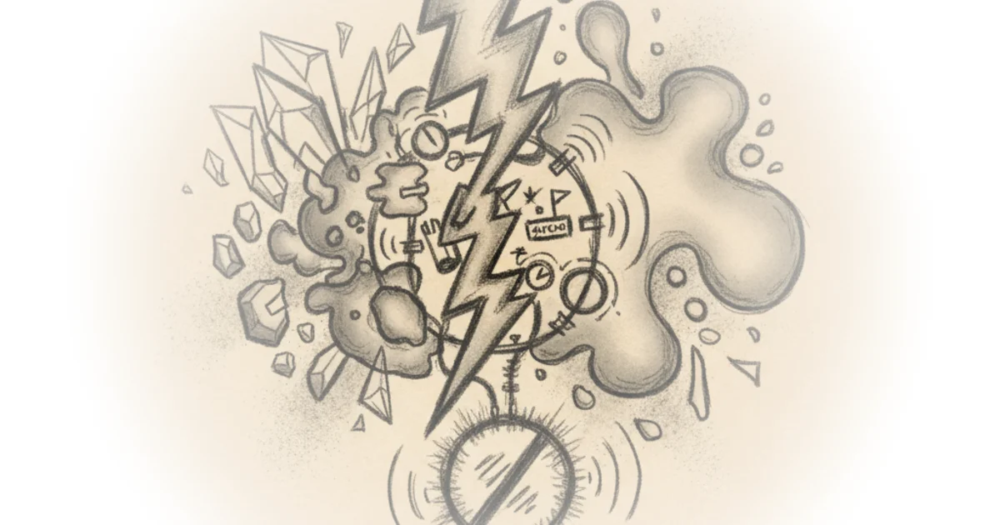

This YouTube series has helped thousands learn to build guitar pedals. Now it's time for the hybrid approach.
What Is a Hybrid Fuzz Face?
The fuzz face circuit is one of the most iconic guitar pedal designs in history. It uses a specific arrangement of transistors that creates rich, warm distortion. For decades, builders have debated whether to use germanium or silicon transistors—each has distinct characteristics.

Josh Scott from JHS Pedals explains that germanium transistors, used in classic fuzz faces from the 1960s, produce a softer, more rounded tone but are extremely sensitive to temperature changes. In contrast, silicon transistors offer brighter, more cutting tones and superior stability—but lack the warmth of their germanium counterparts.
You get the best of both worlds—stability and tonal richness.
Why Build Hybrid?
The hybrid approach combines one silicon transistor with one germanium transistor. This isn't just a theoretical exercise—it solves real-world problems that pedal builders have faced for generations.
First, thermal stability becomes manageable. Germanium fuzz faces are notoriously sensitive to temperature shifts. Playing a summer outdoor festival in hot weather could make the pedal behave erratically. The hybrid design stabilizes the circuit by balancing the transistors' properties.
Second, tonal quality improves significantly. Silicon fuzz faces sound brighter and cut through more clearly but often lack the warmth that players love about germanium circuits. Germanium fuzz faces deliver that sought-after vintage tone but can become unpredictable. The hybrid captures both: the stability of silicon and the character of germanium.
Third, players get to experiment with unique combinations. Scott notes that this approach lets builders discover new tonal possibilities by tweaking which transistor sits where in the signal chain.
How To Build It
The build process begins on a breadboard system—specifically Copper Sound Pedals' DIY board—which allows for easy component swapping without soldering. The builder starts by connecting power and signal jacks, then installs a 2.2 microfarad input capacitor.
The critical step: placing the first transistor as silicon (BC108) and the second as germanium. This specific arrangement creates the hybrid effect. The silicon transistor sits at the front of the circuit while the germanium transistor follows behind it—each position changes how the signal interacts with each transistor type.
Critics might note that modern solid-state fuzz designs have largely solved these temperature stability problems using different technologies, and the hybrid approach is just one solution among many for modern builders. Additionally, some players argue that true vintage germanium tone requires full germanium construction rather than compromises.
Bottom Line
Scott's deep experience teaching this subject across 20 episodes shows in the clarity of his explanation. His core insight—that combining transistor technologies creates better pedals—applies beyond fuzz faces to nearly every analog circuit design. The biggest strength is his practical demonstration: seeing exactly how components connect on a breadboard makes this approach accessible to beginners. The vulnerability? This video assumes viewers understand basic electronics terminology, so complete newcomers may need background knowledge before attempting their own build.